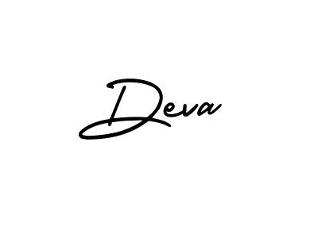

Deva
E-mail-gdevendran2450@gmail.com
Mobile-+91 98********
CAREER OBJECTIVE:
I’m looking forward for a position in Software Testing area to develop my career as a Software Test Engineer
which will be utilizing my technical skills, Quality thoughts and non-technical skills towards the mutual
development of an Organization and My-self.
SUMMARY:
- Good Knowledge of Software Development Life Cycle and Software Test Life Cycle.
- Knowledge of Various SDLC Models, Test Levels, Test Types, and Test design Techniques.
- Knowledge of All phases of the Software Test Process includes Test Planning, Test Design, Test
Execution and Test Closure.
- Knowledge of Generating Test Scenarios, Write Test Cases and Collect Test Data.
- Knowledge of Executing Test Batches and Analyzing Test Result.
- Well Versed in Agile Scrum Methodology, Jira (Defect Management Tool).
- Knowledge of Selenium and Test Automation Process.
- Good interpersonal skills, committed, result-oriented, hard-working with a quest and zeal to learn new
technologies.
SKILL SET:
ACADEMIC QUALIFICATION:
- Completed B.E in Civil Engineering at St. Joseph’s College of Engineering, Chennai with a CGPA of
7.62 in 2018.
- Completed 12th in 2014 at Sree Iyappa Matriculation Higher Secondary School, Chennai with an
aggregate of 92.58% of marks.
- Completed 10th in 2012 at Sree Iyappa Matriculation Higher Secondary school, Chennai with an
aggregate of 94% of marks.
Work Experience & OTHER CREDENTIALS:
- Currently working as Manual tester in T**** for past one year
- Worked as the Graduate Apprentice in Bharath Petroleum corporation LTD. (From dec 2018 to dec 2019).
- Paper Published on “Land Use Change Analysis Using Remote Sensing Technique in Sholinganallur,
Chennai, India” in International Journal of Civil Engineering & Technology (IJCIET), by IAEME
publication (Scopus Indexed Journal).
DECLARATION:
I hereby declare the above-mentioned details are true and correct to the best of my knowledge.
Date:
Place:

Signature
(Deva G)